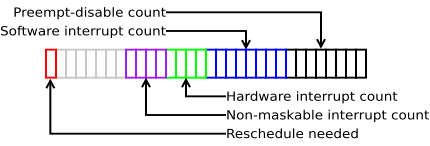

Revisiting the kernel's preemption model, part 2
How we got here
The turn in the discussion was driven by this message from Thomas Gleixner, which started with a review of how things got to this point. Initially, no preemption of kernel code was supported at all, as was the case with older Unix systems. As problems were observed, cond_resched() calls were sprinkled into code paths where the kernel was observed to (or suspected of) running for too long and causing problems. Each of those calls is a signal to the scheduler that it can switch to another thread if need be.
Later, the kernel gained "voluntary preemption", which turned hundreds of existing might_sleep() calls into additional scheduling points. Those calls were placed as a debugging aid to catch cases where a potentially sleeping function was called from a non-sleepable context; they indicate a place where it is possible to reschedule, but were never meant to indicate a good place to reschedule. These calls were pressed into service because they were already there and convenient for this purpose.
Later yet, full preemption made the kernel preemptible at arbitrary points, and realtime preemption made even (most) code holding locks preemptible.
This progression is, Gleixner said, an example of the wrong way to be approaching this problem:
The approach here is: Prevent the scheduler to make decisions and then mitigate the fallout with heuristics.That's just backwards as it moves resource control out of the scheduler into random code which has absolutely no business to do resource control.
He pointed out that the realtime preemption work had run into a similar problem years ago. Making kernel code preemptible, even when it is holding locks, can be good for latency (which is the point of the realtime work), but it can impose a cost in terms of throughput. When preemption can happen at any time, locking contention, in particular, becomes more acute. Often, one thread will cause another to become runnable, at which point the new thread will preempt the first. But if the first is holding a lock that the new one needs, the result will be an immediate block and another context switch. That hurts performance.
In such cases, it would be better to avoid doing the preemption while the first thread is holding the lock. For the realtime case, this was solved through the introduction of "lazy preemption". This code, which has not landed in the mainline kernel, seeks to avoid excessive preemption when (and only when) one non-realtime task would preempt another. If the task that is currently running is holding locks, then the scheduler will set a "lazy preempt" flag rather than preempting that task immediately. Once the locks are released, the preemption can occur. This change restored much of the performance that had been lost for throughput-oriented tasks, Gleixner said, without hurting response time for the realtime tasks.
The problem that is being discussed now is similar: enabling a fully preemptible kernel without hurting the performance of throughput-oriented tasks, many of which do better with voluntary preemption (or no kernel preemption at all). The solution, Gleixner said, can be a variant of the same approach that was taken for the realtime work.
Lazy preemption for the mainline
Some brief background may be helpful for the understanding of the proposed scheme. When the kernel is configured for full preemption, it maintains a "preemption count" that, in short, tracks how many things are preventing preemption of the current task at any time. Its operation is described in this article, which includes this diagram:

Whenever something happens to prevent preemption, such as a call to preempt_disable() or the arrival of an interrupt, the appropriate subfield of the preemption count is incremented. When that condition no longer holds — preempt_enable() is called, for example — that count is decremented. Whenever the count drops to zero, the kernel knows that it can jump into the scheduler to decide which task has the strongest claim on the CPU at that moment.
Calling into the scheduler is expensive, though, so it is best avoided if there is no need to change the running task. Avoiding those calls is the purpose of the "reschedule needed" bit. That bit has an inverted sense; if it is set, then rescheduling is not needed. As long as that bit is set, the preempt count will not be zero, and no calls into the scheduler will be made. When something happens that calls for rescheduling, such as waking a higher-priority task, the bit can be cleared and, as soon as the rest of the count drops to zero, the scheduler will be invoked.
In a non-preemptive kernel, about the only thing that can force rescheduling is the expiration of the current task's time slice. This behavior can be good for a throughput-oriented workload, allowing tasks to run uninterrupted for relatively long periods of time. There are limits, though, and letting tasks run beyond their time slice can lead to latency problems. Long-running kernel code can cause that to happen; avoiding this problem is the motivation for placing calls to cond_resched() in long-running kernel functions. Since the kernel cannot be preempted, it must choose to give up the CPU in such situations.
Gliexner's proposal is meant to preserve this behavior in a fully preemptible kernel. In this world, the existing no-preemption and voluntary-preemption modes would be removed from the scheduler; only full preemption would remain. The maintenance of the preempt count would happen always, as it does with the PREEMPT_DYNAMIC mode used by most distributions now. But there would be one little tweak: if the system is configured to favor throughput, code paths that would normally clear the "reschedule needed" bit would only do so if the current time slice is exhausted. Otherwise, a separate "reschedule eventually" bit, that is not contained within the preempt count, would be set instead.
This change will cause the current task to continue executing for as long as it has some of its time slice left, even if there is another task with the priority to preempt it. There are just a couple of places where that can change; one is on return to user space from a system call, where preemption can occur even in current no-preemption kernels. The "reschedule eventually" bit will be checked there, and might result in a switch to a different task.
The other point where a task might be preempted is when the scheduler interrupt happens; if the scheduler notices that the time slice has expired, it will check the "reschedule eventually" bit. If that bit is set, then the "reschedule needed" bit will be cleared, the preempt count will go to zero, and preemption will happen at the next opportunity.
If, instead, the system is configured for low latency, as might be done for desktop use, for example, the "reschedule eventually" bit will not be used and the kernel will be fully preemptible.
Reworking the scheduler in this way, Gleixner said, would allow the removal of a lot of code that implements the other preemption modes (and which, seemingly, is not heavily used). It would allow the removal of something like 1,400 cond_resched() calls, and would put the scheduler fully in charge of CPU-scheduling decisions. If this solution can be made to work, it looks like a significant improvement over what the kernel does now.
Making it work
Can it be made to work? Gleixner, after having bashed out a proof-of-concept
implementation and measured its performance, thinks so: "If this
concept holds, which I'm pretty convinced of by now, then this is an
opportunity to trade ~3000 lines of unholy hacks for about 100-200 lines of
understandable code
". Linus Torvalds agreed:
"I think you more than proved the concept
".
There is, of course, some ground to cover between a proof-of-concept implementation and a reworked scheduler that can be part of a production kernel release. A couple of obstacles (at least) lie in the way. One is that there are four architectures (alpha, hexagon, m68k, and um (user-mode Linux)) that do not support the preempt-count machinery; as things stand, they would be unable to support the new scheduler. Matthew Wilcox was quick to suggest that this problem qualifies those architectures for removal, but there is probably not much in the way of adding preempt-count support instead.
The other problem is that the CPU scheduler is a subtle and complex beast, and Gleixner is not actually a scheduler developer. There will surely be performance issues that will emerge from a change like this, and they will require the right sorts of skills to resolve. Gleixner has let it be known that he is not the person with those skills:
That's as much as I wanted to demonstrate and I'm not going to spend more cycles on it as I have already too many other things on flight and the resulting scheduler woes are clearly outside of my expertise.Though definitely I'm putting a permanent NAK in place for any attempts to duct tape the preempt=NONE model any further by sprinkling more cond*() and whatever warts around.
So, in other words, the path to a simpler and better scheduler has been
laid out, but to get there somebody else is going to have to do the work to
push the job through to completion. As of this writing, nobody has stepped
forward to take this role. That will likely change, but one should not
expect to see a reworked scheduler in the immediate future; this is the
kind of change that can take a while to settle into a stable solution.
When that happens, though, the payoff should be significant.
| Index entries for this article | |
|---|---|
| Kernel | Preemption |
| Kernel | Scheduler/Preemption models |
Posted Oct 2, 2023 17:18 UTC (Mon)
by josh (subscriber, #17465)
[Link] (2 responses)
Posted Oct 3, 2023 23:51 UTC (Tue)
by bnorris (subscriber, #92090)
[Link] (1 responses)
Posted Oct 4, 2023 10:31 UTC (Wed)
by mathstuf (subscriber, #69389)
[Link]
Posted Oct 2, 2023 18:21 UTC (Mon)
by Manifault (guest, #155796)
[Link]
Posted Oct 2, 2023 19:36 UTC (Mon)
by joib (subscriber, #8541)
[Link]
Posted Oct 2, 2023 20:41 UTC (Mon)
by iabervon (subscriber, #722)
[Link] (1 responses)
Posted Oct 3, 2023 4:44 UTC (Tue)
by alison (subscriber, #63752)
[Link]
An obvious way to perform such designations is via the deadline scheduler. The fact that deadline scheduling is scarcely mentioned in discussions like this article confirms the suspicion that it is usable only in a limited set of contexts. Perhaps deadline scheduling is really only workable for RTOSes or systems with fewer tasks, like guest OSes running on top of a hypervisor.
Posted Oct 2, 2023 20:47 UTC (Mon)
by wildea01 (subscriber, #71011)
[Link] (1 responses)
Posted Oct 23, 2024 9:34 UTC (Wed)
by meted (subscriber, #168857)
[Link]
The link says the "video has been removed". Could you post the presentations title so, who ever is curious can search for it?
Posted Oct 3, 2023 7:52 UTC (Tue)
by terminus (subscriber, #49129)
[Link] (2 responses)
Working on a RFC series to do just that. Thomas' approach (obviously) works, but as always there are kinks to clean up.
cond_resched(), in particular, has accumulated a variety of functionality almost in the manner of the fleas in the poem:
"Great fleas have little fleas upon their backs to bite 'em,
As you note, keeping the preempt-count takes care of much of this but there are some tricky places, in particular RCU.
Cheers
Posted Oct 3, 2023 15:21 UTC (Tue)
by PaulMcKenney (✭ supporter ✭, #9624)
[Link] (1 responses)
I was initially concern about nohz_full CPUs, but after more discussion with Frederic, this might actually be OK. If there is an RCU grace period in progress, RCU will restart the scheduler tick interrupt, otherwise maybe no one cares. Maybe. ;-)
Posted Oct 5, 2023 0:42 UTC (Thu)
by tglx (subscriber, #31301)
[Link]
Posted Sep 10, 2024 18:49 UTC (Tue)
by meyert (subscriber, #32097)
[Link] (2 responses)
Posted Sep 10, 2024 18:57 UTC (Tue)
by corbet (editor, #1)
[Link] (1 responses)
Posted Sep 11, 2024 10:39 UTC (Wed)
by joib (subscriber, #8541)
[Link]
Revisiting the kernel's preemption model, part 2
transparency
transparency
Revisiting the kernel's preemption model, part 2
Revisiting the kernel's preemption model, part 2
Revisiting the kernel's preemption model, part 2
Revisiting the kernel's preemption model, part 2
> throughput-sensitive, and have only latency-sensitive tasks preempt other tasks (and make them expend their
> time slice faster if they do).
Revisiting the kernel's preemption model, part 2
Revisiting the kernel's preemption model, part 2
> and complements the article nicely:
> https://www.youtube.com/live/OUhB9-v-2r8?t=2h4m45s
Revisiting the kernel's preemption model, part 2
And little fleas have lesser fleas, and so ad infinitum."
Ankur
Revisiting the kernel's preemption model, part 2
Revisiting the kernel's preemption model, part 2
follow up?
There was a version of the lazy preemption patches posted in May. Since then I've seen bits of conversation that suggest that the idea is still alive, but I'm not sure how actively it is being developed at the moment.
follow up?
follow up?